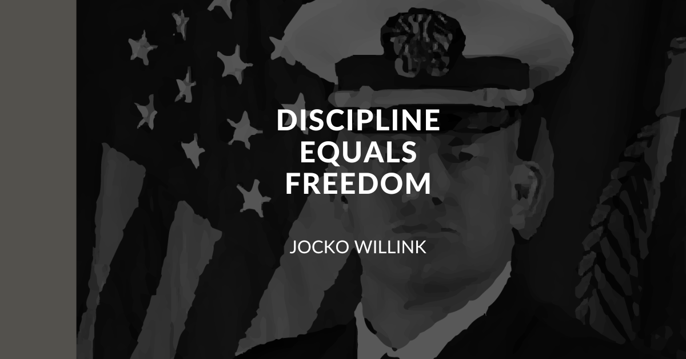

Disciplina e libertà sono due concetti che, sebbene possano sembrare in contrasto, in realtà si completano a vicenda. La libertà rappresenta la capacità di agire senza costrizioni, di scegliere autonomamente i propri obiettivi e i mezzi per raggiungerli. La disciplina, invece, può essere considerata uno strumento essenziale per conquistare e preservare la libertà. Per esempio, imparare a leggere e scrivere — un atto disciplinato e ripetitivo — ci consente di accedere al sapere, di formarci un pensiero critico e di esprimere liberamente le nostre idee. È proprio attraverso la disciplina, fatta di impegno, fatica e sacrificio, che possiamo essere fieri dei nostri traguardi e, soprattutto, liberi di realizzare ciò che desideriamo.
Alcuni esempi concreti:
- Un bambino che impara a rispettare le regole del gioco (disciplina) può godere della libertà di giocare con gli altri e di costruire relazioni sociali positive.
- Un cittadino che osserva le leggi e le norme civili (disciplina) contribuisce a una società ordinata, dove ciascuno può godere della libertà di espressione, di movimento e di pensiero.
In sintesi, la disciplina non limita la libertà, ma la rende possibile e sostenibile. Solo attraverso regole interiorizzate e comportamenti responsabili possiamo aspirare a una libertà autentica e duratura.
